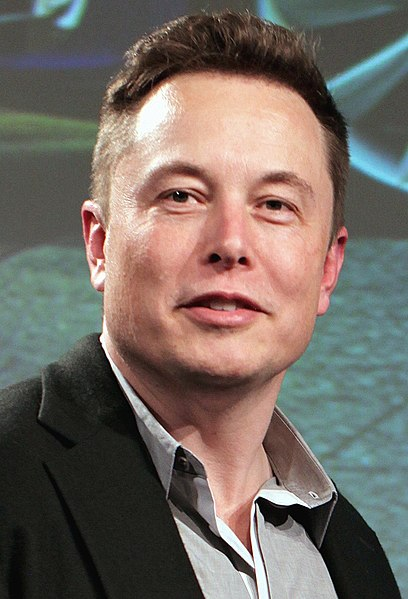

Elon Musk
The Technoking
Elon Musk is a visionary entrepreneur who has made significant contributions to the fields of technology and transportation. He has founded and led companies such as SpaceX, Tesla, Neuralink, and The Boring Company, each of which is pushing the boundaries of what is possible in their respective industries. His work with SpaceX has greatly advanced the field of space exploration and has made it possible for private companies to launch rockets and spacecraft into orbit. His leadership at Tesla has revolutionized the automotive industry and has made electric cars more accessible to the public. Overall, Elon Musk's work has had a profound impact on the world and will continue to shape the future for years to come.
Biographies
- Born in Pretoria, South Africa in 1971, Elon Musk showed an early interest in technology and business.
- He attended the University of Pretoria, but later dropped out to study at the University of Pennsylvania.
- Musk founded Zip2, a web software company, in 1995, which was later sold to Compaq for almost $300 million.
- In 2002, he founded SpaceX with the goal of reducing the cost of space travel and making it possible for humans to live on other planets.
- Musk also played a key role in the founding of Tesla Motors, which is now a leading producer of electric vehicles.
- In addition to his work with SpaceX and Tesla, Musk has also founded companies such as SolarCity and Neuralink, which are working on sustainable energy and neural technology.
- Musk has also been involved in several high-profile ventures such as the Hyperloop, a proposed high-speed transportation system, and the Boring Company, which aims to reduce traffic congestion.
- With his relentless drive and ambitious vision, Musk has become one of the most influential figures in technology and business today.